Ubicación
Partiendo desde La República Argentina, la plata se encuentra en la Provincia de Buenos Aires (al nordeste), ubicada a 56 km de la Ciudad Autónoma de Buenos Aires.
Se encuentra a tan solo unos cuantos km de la costa del Río de la Plata, lo limitan los municipios Berisso y ensenada, siendo estos, independientes de La Plata pero coexisten para conformar la aglomeración demográfica que conforma todo "Gran la plata", estos limitan con el Río de La Plata. La Plata está rodeada por los barrios de Los Hornos, Tolosa, San Carlos, Altos de San Lorenzo y Villa Elvira.
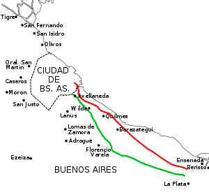
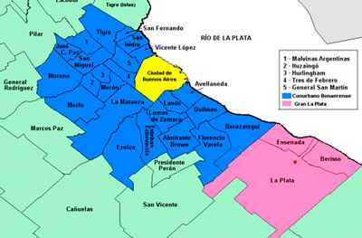
También conocida por
-
"La Ciudad de las Diagonales"
La ciudad de La Plata tiene un diseño particular y fue formulado por el arquitecto Pedro Benoi en el siglo XIX. Su trazado es un cuadrado perfecto, en el cual se inscribe un eje histórico. Sobresalen las diagonales que lo cruzan formando pirámides y rombos dentro de su contorno, con bosques y plazas colocadas con exactitud cada seis cuadras. Responde a criterios de organización, equilibrio y orden entre el espacio construido y el espacio verde que funciona como articulador. El plano de construcción de la plata se llevó muchos premios y honores por el mundo, en la arquitectura siempre se lo ve como un referente a gran escala de perfecta armonía y para el arte de la planificación.
Para cualquier turista es fascinante la simetría de las calles, las extensas diagonales que no parecen tener fin que recorren de la punta de la ciudad hacia la otra, y lo practicas que son. Si no fueran por las diagonales, ir de una esquina a otra tomaría alrededor de ⅔ horas, pero si tomás una diagonal en auto, en tan solo 20 minutos con el tráfico despejado se llega sin problemas.
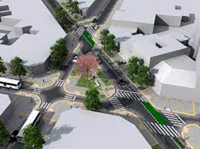
-
"La Ciudad de los Tilos"
Como platense (yo, Carolina) esta es mi característica favorita de la Ciudad, éste uno de los símbolos más predominantes de La Plata. A mediados de fin de año, cerca de Noviembre, florecen los tilos en La Plata , si bien la plata ya es caracterizada por tener mucho espacio verde los tilos deben formar el 50% de los árboles en La Plata.
El aroma a tilo, dulce y empalagoso, el color amarillo de los tilos, todas las veredas de teñidas de naranja por los pétalos que caen indica que llega el verano y viene acompañada de esa cálida brisa, que a muchos, les da alergia.
Fueron traídas de Alemania y sembradas en el siglo XIX al compás de la creación de la ciudad por el naturista Spaeth, quien creó la especie de tilo “tilia moltkei” (una combinación genética conveniente de otras especies de tilo), con el pasar de las décadas, se esparcieron por toda la ciudad y el bosque.
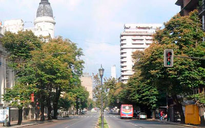
-
"Ciudad Verde"
Se la llama así mas entre los ciudadanos y personas de alrededor, debido a la gran cantidad de árboles que se encuentran en la ciudad , además de los tilos.
Es normal que en cada calle se vea una copa cerrada de árboles dando un reflejo verde, sombra y brisa natural. La gran arboleda de La Plata no es casualidad, ya que era parte del proyecto de la creación por Dardo Rocha para el siglo XX, ya se habían plantado 16.000 árboles cuando solo había 95.000 habitantes, esto equivale a un ejemplar por cada seis personas.
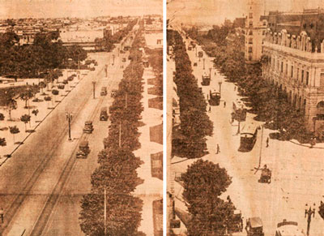
Demografía
Considerando sólo al partido de La Plata, su población tuvo desde 1960 la siguiente evolución en orden cronológico. Solo La Plata (sin alrededores) es el segundo partido de Buenos Aires más poblado, después de La Matanza.
- Censo 1960: 337.060 habitantes.
- Censo 1970: 391.247 habitantes.
- Censo 1980: 459.054 habitantes.
- Censo 1991: 521.936 habitantes.
- Censo 2001: 563.943 habitantes.
- Censo 2010: 654.324 habitantes.
- Estimación 2021: 719.013 habitantes.
La población es eminentemente descendiente de españoles e italianos, aunque también se destacan alemanes, árabes, polacos, judíos, paraguayos, peruanos y bolivianos, siendo mas prominente estos dos últimos.
Bioma
-
Clima
De clima templado, la temperatura media anual ronda los 16,3 °C y precipitaciones medias anuales calculadas en 993.9 mm. Por su cercanía al río de la Plata la humedad tiende a ser abundante, siendo la humedad media anual de 80%. En cuanto al viento, su intensidad media anual llega a 12 km/h, siendo predominantes los vientos provenientes del Este, Noreste y Suroeste.
Su temperatura más alta fue de 39 °C en verano y su mínima de -5,7 °C en invierno.
Las nevadas son hechos atípicos y muy poco frecuentes en la ciudad, desde su fundación solo se han producido cinco eventos de caída de nieve: en julio de 1912, en 22 de junio de 1918, en 1928, en el 9 de julio de 2007 y el 6 de junio de 2012.
-
Relieve
En la cuenca predominan las llanuras, pudiéndose considerar dos estructuras dispuestas de norte a sur: al este elmacizo matogrosense algo deprimido en su parte al noroeste; al oeste la llanura pampeano-chaqueña, una vasta región casi plana.
En medio de ambas estructuras se encuentra un umbral central, que incluye el Pantanal. El relieve con alturas más importantes se encuentra en los bordes. En la zona oriental hay un cinturón orogénico rico en yacimientos minerales y, en el occidental, las sierras pampeanas y andinas.
Historia
En febrero del año 1880, con la sanción de la ley que proclamaba a la ciudad de Buenos Aires como Capital Federal de la República Argentina, comienza el proceso político que culmina con la fundación de la ciudad de La Plata, diseñada por el arquitecto arquitecto Pedro Benoit.
El gobierno provincial debía trasladarse a otra ciudad, para lo cual se estudiaron varias localidades bonaerenses pero ninguna era satisfactoria. El entonces gobernador de la provincia, Dr. Dardo Rocha, decidió fundar una nueva ciudad.
El Municipio de Ensenada reunía las condiciones necesarias: tenía puerto, relativa proximidad con Buenos Aires, buenas condiciones topográficas y climáticas y posibilidades de canalizar allí la economía de la provincia. Por un decreto del 6 de mayo de 1881 se llamó a concurso internacional para proyectar los cuatro edificios principales: Casa de Gobierno, Legislatura, Municipalidad y Catedral.
El nombre deLa Plata surgió por iniciativa del senador José Hernández, autor del Martín Fierro , quien fundamentó su posición en el nombre de Virreinato del Río de La Plata, que había llevado la región.
Finalmente, el 19 de noviembre de 1882, en presencia del gobernador Dardo Rocha y el ministro Victorino de la Plaza en representación del presidente Julio Argentino Roca, se colocó la Piedra Fundacional en una urna enterrada en el centro geográfico de la ciudad, hoy en día, Plaza Moreno. En ese acto, Dardo Rocha pronunció las siguientes palabras:
"Hemos dado a la nueva capital el nombre del río magnífico que la baña, y depositamos bajo esta piedra, esperando que aquí queden sepultadas para siempre, las rivalidades, los odios, los rencores, y todas las pasiones que han retardado por tanto tiempo la prosperidad de nuestro país.
Desde fines de 1882, los primeros habitantes —legiones de albañiles italianos— comenzaron a ocuparse de las obras fundacionales. En junio de 1883 se empezó a construir el Palacio Municipal. Un año más tarde, en 1884, los poderes públicos de la Provincia fueron instalados definitivamente en la nueva ciudad.
Entre 25 y 29 de marzo de 1884 se llevó a cabo el primer censo de la ciudad. Este censo determinó que en la ciudad habitaban 10407 personas (8779 varones y 1628 mujeres), siendo solo 1278 argentinos y el resto extranjeros, provenientes mayormente de Italia, España, Francia, Portugal, Austria e Inglaterra."
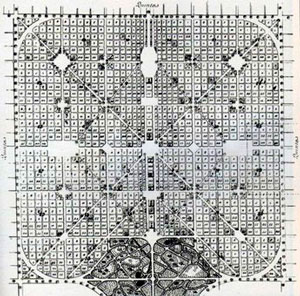
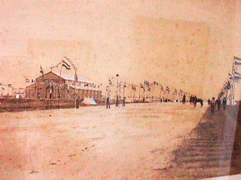
Lugares Turísticos
-
Catedral
La Catedral de la Inmaculada Concepción, de estilo neogótico, es el principal templo católico de la ciudad, una de las más importantes de América y una de las iglesias más grandes del mundo. Su nombre fue inscripto en la basílica de San Pedro de la Ciudad del Vaticano. Está ubicada en las calles 14 y 15, y las avenidas 51 y 53, frente a la plaza Moreno, centro geográfico de la ciudad. Comenzó a funcionar, como templo mayor, el 19 de noviembre de 1932, fecha considerada como inaugural. La obra se retomó sesenta años después de haber parado en 1930, a mediados de la década del '90. Las obras principales, incluyendo dos gigantescas torres de 112 m de altura, concluyeron a fines de 1999 con una importante inauguración el 19 de noviembre de 1999.
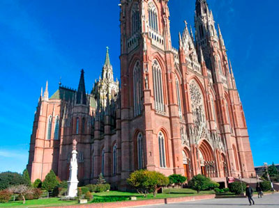
-
Paseo del Bosque
Es el mayor parque de la ciudad, situado entre las calles 50 y 60, 1 y 122. Ocupa una extensión de 60 hectáreas donde se pueden observar árboles de variadas especies como álamos, robles, ombúes, sauces y eucaliptos.
El parque alberga importantes atracciones turísticas y culturales, entre ellas, La Gruta, Lago del Bosque, Jardín Zoológico y Botánico, Observatorio Astronómico, Museo de Ciencias Naturales, Anfiteatro Martín Fierro, Estadio Juan Carmelo Zerillo (Club Gimnasia y Esgrima) y Estadio Jorge Luis Hirschi (Club Estudiantes).
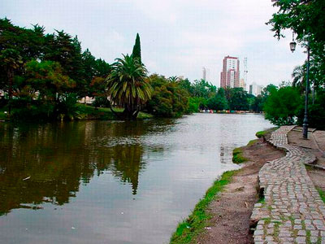
-
Universidad Nacional de La Plata (UNLP)
La universidad pública platense o llamada UNLP está considerada , junto a la Universidad de Buenos Aires o llamada UBA, una de las dos principales instituciones educativas y representativas del país y una de las más conocidas de latinoamérica. Es pionera en estudios y desarrollos culturales, artísticos y científicos de avanzada.
Su origen se remonta a la fundación de la ciudad de La Plata. Senadores provinciales impulsaron, el 12 de junio de 1889, un proyecto de ley para crear una universidad provincial en la nueva capital de Buenos Aires. Se sancionó definitivamente el 27 de diciembre de 1889 y fue promulgado el 2 de enero de 1890 . La norma establecía la creación de una Universidad de Estudios Superiores, en La Plata, con facultades de Derecho, Medicina, Química y Farmacia y Ciencias Físico-matemáticas. En el año 1905 fue nacionalizada.
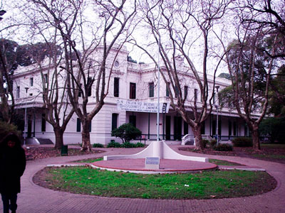
-
Teatro Argentino
Es un destacado complejo artístico, ubicado en las calles 9 y 10 y las avenidas 51 y 53. A fines del siglo XIX un grupo de vecinos de la ciudad gestó la idea de crear un teatro de envergadura En 1885, la Sociedad Anónima Teatro Argentino adquirió la manzana que ocupa el actual edificio.
En 1977, durante un habitual ensayo del ballet estable, un incendio redujo la sala de estilo renacentista. El gobierno militar decidió demolerlo y construir un nuevo y moderno centro cultural. Las obras comenzaron en 1980 y se terminaron en 1984. El complejo actual ocupa una superficie de 60.000 m² cubiertos, polifuncionales, con salas independientes, áreas de ensayo, camarines y talleres de escenografía, vestuario, utilería.
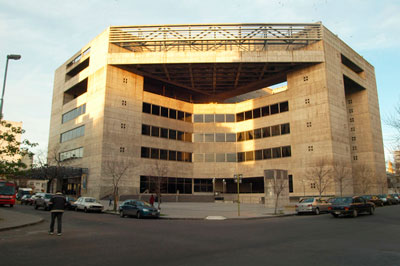
-
Teatro Municipal Coliseo Podestá
El teatro, ubicado en la calle 10, entre 46 y 47, fue inaugurado el 19 de noviembre de 1886, bajo el nombre de Teatro Politeama Olimpo. Su arquitectura responde a la tipología de teatro a la italiana, con la sala en forma de herradura, propia del Siglo XIX.
-
Museo de Ciencias Naturales
Pertenece a la Facultad de Ciencias Naturales. Está ubicado en el Paseo del Bosque. Su edificio, inspirado en grandes museos europeos (Gliptoteca de Munich, Altes Museum en Berlín, Fitzwilliam Museum en Cambridge y la National Gallery en Londres) es de estilo arquitectónico neoclásico y está ornamentado con motivos de la América Precolombina. La construcción comenzó en 1884 y se inauguró el 19 de noviembre de 1888. Su fundador y primer director fue Francisco Pascasio Moreno. Su misión es contribuir al conocimiento de la naturaleza, el ser humano y su cultura, y difundir ese conocimiento por medio de tareas de investigación y divulgación científica, exhibiciones, actividades educativas y visitas.
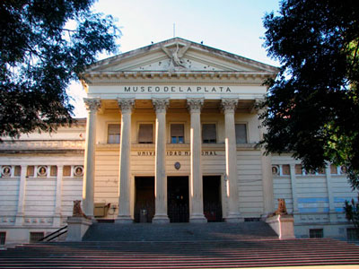
-
Estadio Único de La Plata
Propiedad de la Provincia de Buenos Aires, pertenece a la Jefatura de Gabinete de Ministros y es considerado el estadio más moderno de América Latina. Está ubicado dentro de un predio parquizado, entre las avenidas 32 y 526, 25 y la calle 21.
En 1989, a partir de la convocatoria del Gobierno de la Provincia de Buenos Aires y de la Municipalidad de La Plata, los clubes platenses más relevantes, Estudiantes y Gimnasia, constituyeron una comisión para la construcción y la administración de un complejo dedicado, integralmente, a la práctica de fútbol y otras disciplinas deportivas.
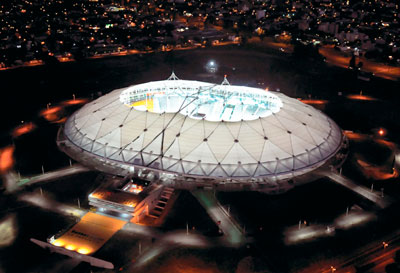
-
Centro Cultural Pasaje Dardo Rocha
Antes, estación ferroviaria 19 de noviembre. Está ubicado en el centro de la ciudad, en las calles 49 y 50, 6 y 7. La entrada principal está frente a la Plaza San Martín. Es uno de los edificios más bellos de la época fundacional de dicha ciudad.
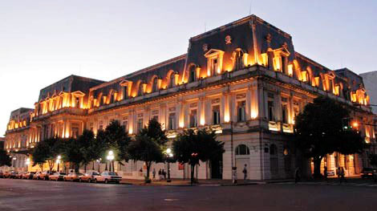